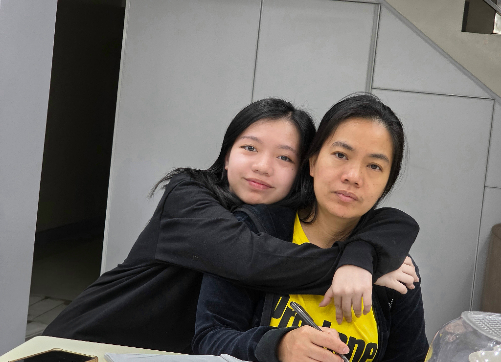
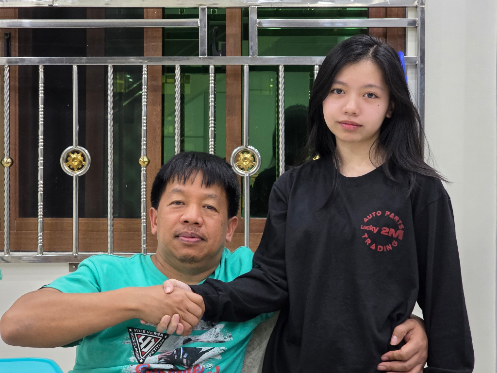
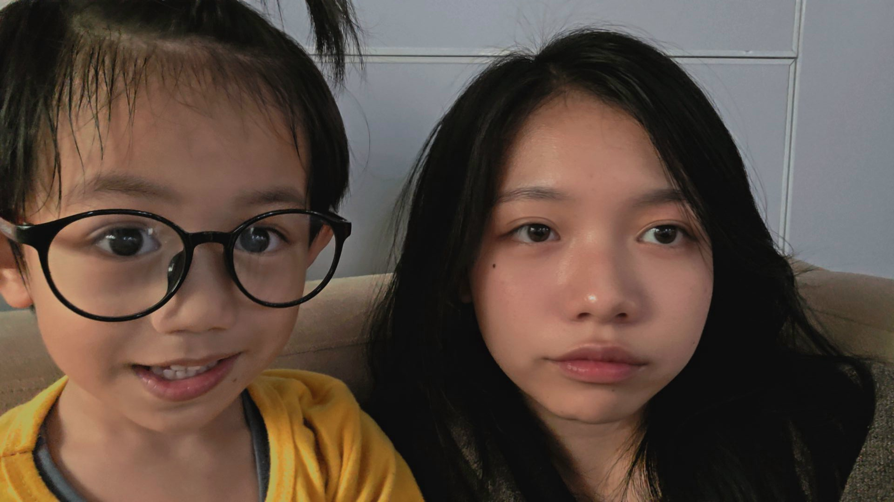
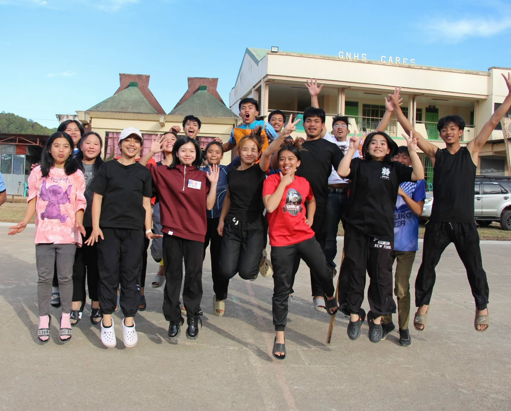

MomFloribel L. Palpal · Age 40
For Mom
All my gratitude, wrapped in a hug.
The people who made every achievement possible.

MomAll my gratitude, wrapped in a hug.

DadThe hand that always keeps me safe.

SiblingMy constant in every chapter

FriendsThe family I chose, and I'm grateful for each one.